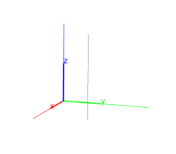
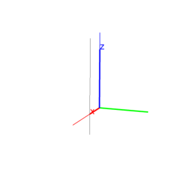
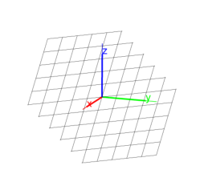
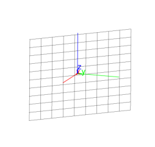

-
A point A and a line L.
parallel(A,L) returns and draws the line through A
parallel to L.
Input:
parallel(point(1,1,1),line(point(0,0,0),point(0,0,1)))
Output:

- Two non-parallel lines L1 and L2.
parallel(L1,L2) returns and draws the plane containing
L2 that is parallel to L1.
Input:
parallel(line(point(1,0,0),point(0,1,0)),
line(point(0,0,0),point(0,0,1)))
Output:

- A point A and a plane P.
parallel(A,P) returns and draws the plane through
A that is parallel to A.
Input:
parallel(point(0,0,0),plane(point(1,0,0),point(0,1,0),point(0,0,1)))
Output:

- A point A and two non-parallel lines L1 and
L2.
parallel(A,L1,L2) returns and draws the plane through
A that is parallel to L1 and L2.
Input:
parallel(point(1,1,1),line(point(0,0,0),point(0,0,1)),
line(point(1,0,0),point(0,1,0)))
Output:
